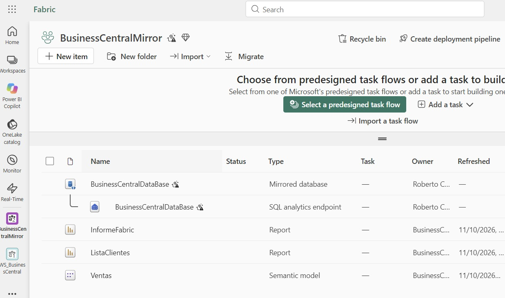
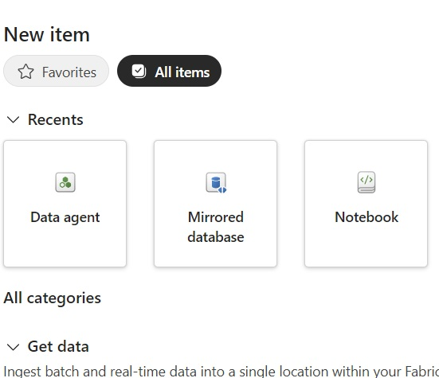
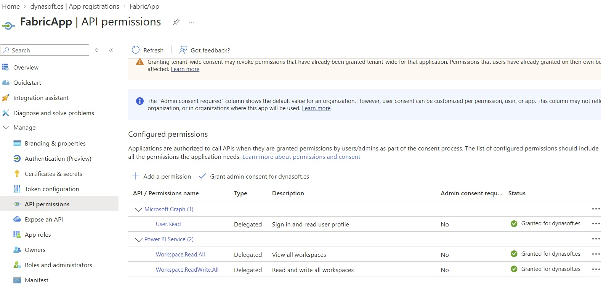
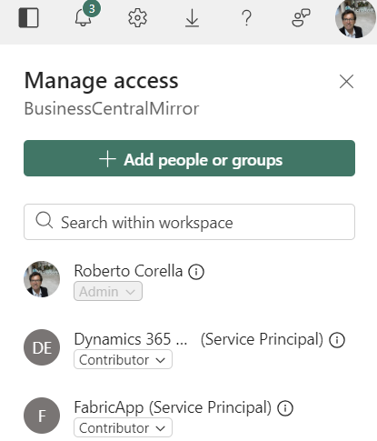
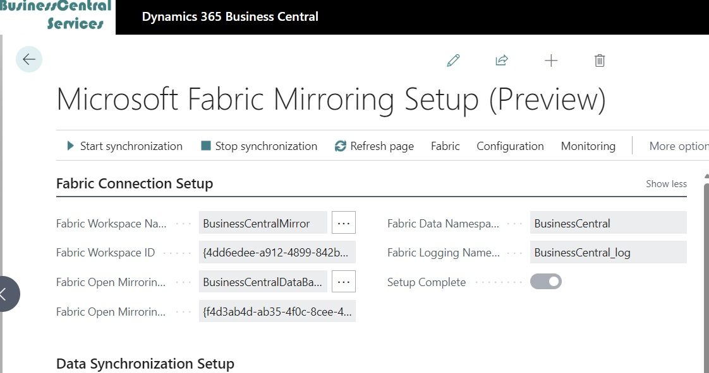
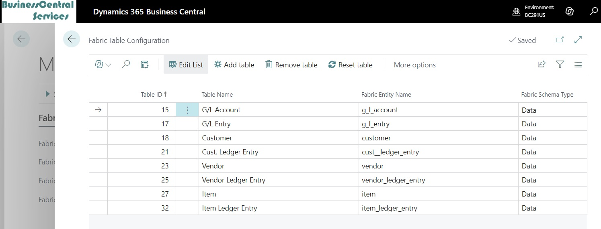
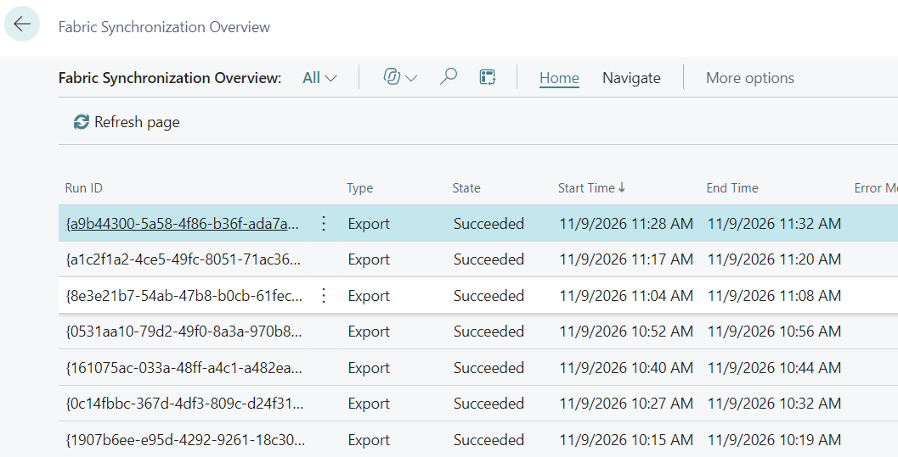

Connect Business Central to Microsoft Fabric: Step-by-Step Guide (BC 29.1)
For years, getting Business Central data into Power BI meant building your own integrations: APIs, scheduled exports, dataflows or intermediate processes that someone had to maintain. With version 29.1, that changes: Business Central includes a native connector that replicates its data to Microsoft Fabric through a mirrored database.
In this article, I walk through what you need, how to configure the connection from start to finish, and what to watch out for so synchronization works on the first attempt.
Prefer to follow the setup on screen? Watch the practical demonstration below.
Why replicate Business Central data to Fabric?
A mirrored database in Fabric maintains a copy of the Business Central tables you select. You can build reports, dashboards, semantic models or even agents on that copy, without querying your production Business Central environment directly every time someone opens a report.
- Analytics moves out of the ERP: heavy reporting workloads no longer compete with everyday users.
- You choose which tables and companies to replicate, so you do not have to copy everything.
- The data lands in an environment designed for analytics, ready for Power BI and the other Fabric workloads.
- Microsoft is moving the existing Business Central Power BI apps to Fabric, so similar content will be available on this foundation.
What you need before starting
The connector relies on three pieces, and all three need to be in place:
- A Business Central environment running version 29.1 or later. If yours is older, you will need to create a new environment with that version.
- Microsoft Fabric capacity. If you do not have a subscription yet, you can activate a Fabric trial to start working and experimenting.
- An application registered in Microsoft Entra ID to connect Business Central and Fabric.
Step 1: Create the Fabric workspace
A workspace in Fabric serves the same purpose as in Power BI: it is the place where items live and permissions are managed, but with more tools available.
- From My workspace, create a new workspace, for example, "Business Central".
- Make sure you assign it to Fabric capacity or a Fabric trial. Without capacity, you cannot create the mirrored database.
- Apply the changes.

Step 2: Create the mirrored database
Inside the workspace, create a new Mirrored database item and give it a descriptive name, such as "Database Business Central".
Fabric takes a moment to deploy it. Once it is ready, you have an empty database: this is the destination to which Business Central will send data. Until we configure the other end, there will be nothing inside.

Step 3: Enable API access in Fabric
This requirement is easy to overlook. In the Fabric admin portal, under tenant settings, enable the option that allows service principals to call Fabric APIs.
If it is disabled, Business Central will try to connect from outside and Fabric will reject the request. This is the first setting I would check if something fails later.
Step 4: Register the application in Entra ID
Business Central needs an identity to authenticate with Fabric. Open the Fabric setup page in Business Central by searching for "Fabric" or using assisted setup. By default, the option to use your own app registration is not shown; enable it through Personalize.
Once enabled, two additional fields appear. Microsoft has created a dedicated app registration for this scenario, and in theory you only need to enter its identifier. In my preview environment, I could not get that approach to work, so I used my own app registration, as I would for another Business Central connection. If Microsoft's registration works for you, great; otherwise, this is the alternative I used.
Configure the app registration
- Create the registration in Entra ID, for example, "Fabric app".
- API permissions: add delegated Power BI Service permissions for workspaces. Read access should be enough for this part, but in my test I assigned both read and write because read-only access gave me problems.
- Client secret: under Certificates & secrets, create a new client secret.
- Redirect URI: add the Business Central return URL, https://businesscentral.dynamics.com/
OAuthLanding.htm .

The confusing detail: the principal ID
From the app registration's overview page, you need the Application (client) ID. That is familiar enough. But the principal ID requested by Business Central is not that identifier.
To find it, go to Enterprise applications in Entra ID, locate the application you just created, and copy its Object ID. That is the value to enter as the principal ID.
| Business Central field | Where to find it |
|---|---|
| Client ID | App registrations → Application (client) ID |
| Client secret | App registrations → Certificates & secrets |
| Principal ID | Enterprise applications → Object ID |
Step 5: Give the application workspace access
With the application created in Entra ID, add it to the Fabric workspace before trying to connect Business Central:
- Open Manage access in the workspace.
- Add the application you registered in Entra ID.
- Assign at least the Contributor role.
Without that role, you cannot connect from Business Central. Think of the application as the intermediary between Business Central and Fabric: it needs permission to write to the destination.

Step 6: Connect Business Central to the workspace and database
On the Fabric setup page in Business Central, specify the workspace and mirrored database that should receive the data. You can enter their names or use their identifiers. Then enter the client ID, secret and principal ID from the previous steps.
The setup remains incomplete until you finish every step. Once the fields are filled in, run Test connection: Business Central will ask you to authenticate and confirm whether the connection works.

Step 7: Choose tables and companies
Now decide what to replicate:
- Tables: add the tables you want to bring into Fabric, such as customers, items, vendors and accounts. You do not need to replicate everything.
- Companies: if your environment has several companies, choose whether to replicate one or all of them.
Replicating only what you need reduces data volume, synchronization time and the complexity of the models you build later.

When your selection is ready, choose Connect to Fabric. Until you do, the setup will not be marked as complete.
Step 8: Set the frequency and start synchronization
Specify how often, in minutes, data should be exported to Fabric. The right interval depends on your needs: if reports are only checked once a day, synchronizing every few minutes may be unnecessary; if you need near-real-time information, use a shorter interval.
Then start synchronization. Remember that it is asynchronous: it does not execute immediately, but according to its schedule.
Step 9: Monitor synchronization
Business Central includes a Monitoring section where you can see:
- How each synchronization is running.
- Whether errors have occurred and their details.
- The different synchronization links in the side panel.
This is where to look if data does not appear in Fabric when you expect it.

Step 10: Check that the data arrives
To validate the result, I created a new test customer in Business Central before starting the process, using a sample address. After synchronization, Fabric shows a Business Central schema containing the tables we configured. When I open the customer table, the new record is there.
It is a straightforward way to check the whole chain end to end: create a recognizable record in Business Central and then find it in Fabric.
Quick troubleshooting checklist
- Is the environment running 29.1 or later?
- Is the Fabric setting allowing service principals to access the APIs enabled?
- Is the principal ID the Object ID of the enterprise application, rather than the app registration?
- Is the redirect URI the Business Central return URL?
- Did you add the application to the workspace as a Contributor before connecting?
- Have you chosen Connect to Fabric and selected the tables and companies?
What comes next?
Once the data is replicated to Fabric, the natural next step is to build a semantic model so Power BI can work with the replicated Business Central data. That will be the topic of the next article.
If you try this, I would love to hear how it goes, especially if you manage to use the app registration provided by Microsoft.
Watch the setup in action
Follow the full setup and see the synchronization in practice in the video below. You can also watch it directly on YouTube.